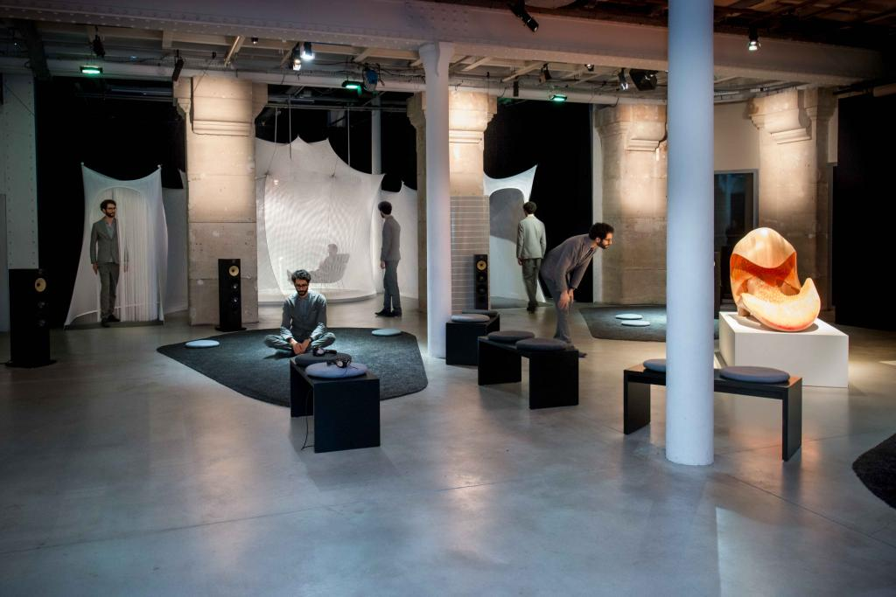

Hypercompression
Tools for Dynamic Surround Sound Design
Charles Holbrow
Opera of the Future
Advisor
Tod Machover
Professor of Music and Media
MIT Media Lab
Reader
Joseph A. Paradiso
Associate Professor of Media Arts and Sciences,
MIT Media Lab
Reader
James A. Moorer
Principal Scientist
Adobe Systems, Incorporated


Contribution
Audio Processing Software
- Dynamic Control of Surround Spatialization
- Dynamic Control of Surround Sound Dynamics
- Seamless Integration with Digital Audio Workstations

Amplification gives us...
- Loudness!
- Precise Control in the Studio
...but we lose...
- Acoustic Sound Projection
- Acoustic Dynamics

Reverb
EQ
Expansion
Automation
Gating
Delay
Pitch Shift
Acoustics

Compression

Uses for Compression
- Increase Perceived Loudness
- Improve Intelligibility
- Improve Articulation
- Smooth A Performance
- Shape Transients
- Extract Ambience
- De-ess Vocals
- Balance Multiple Signals
- Add Distortion
Sidechain Compression
Uses for Sidechain Compression
- Improve Intelligibility
- Shape Transients
- De-ess Vocals
- Balance Multiple Signals
Pierre Béique Organ at the Montréal Symphony
6,489 Pipes!